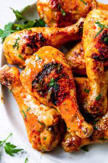

BBQ Chicken Recipe

Description
Heres how to make a good crispy BBQ Chicken.
You will be needing the following items to do this dish
- 1 head romaine lettuce, chopped
- 1 (15 ounce) can black beans rinsed and drained
- 1 (15 ounce) can sweet corn, drained
- 1 red bell pepper
- 1 cup peeled, shredded jicama
- 1 cup shredded carrots
- 4 scallions, thinly sliced
- ¼ cup chopped fresh basil
- ¼ cup chopped fresh cilantro
- 3 limes, divided
- 1 (6 ounces) package cooked chicken breast strips (such as Foster Farms)
- 2 tablespoons barbeque sauce
- 1 avocado - peeled, pitted, and cubed
- Mix lettuce, black beans, corn, red bell pepper, jicama, carrots, scallions, basil, and cilantro together in a large bowl. Juice 2 limes and drizzle juice over salad; toss lightly.
- Combine chicken and barbeque sauce in a microwave-safe bowl; heat in microwave until chicken is warmed through, about 45 seconds.
- Arrange chicken and avocado on top of the salad and squeeze remaining lime over salad.